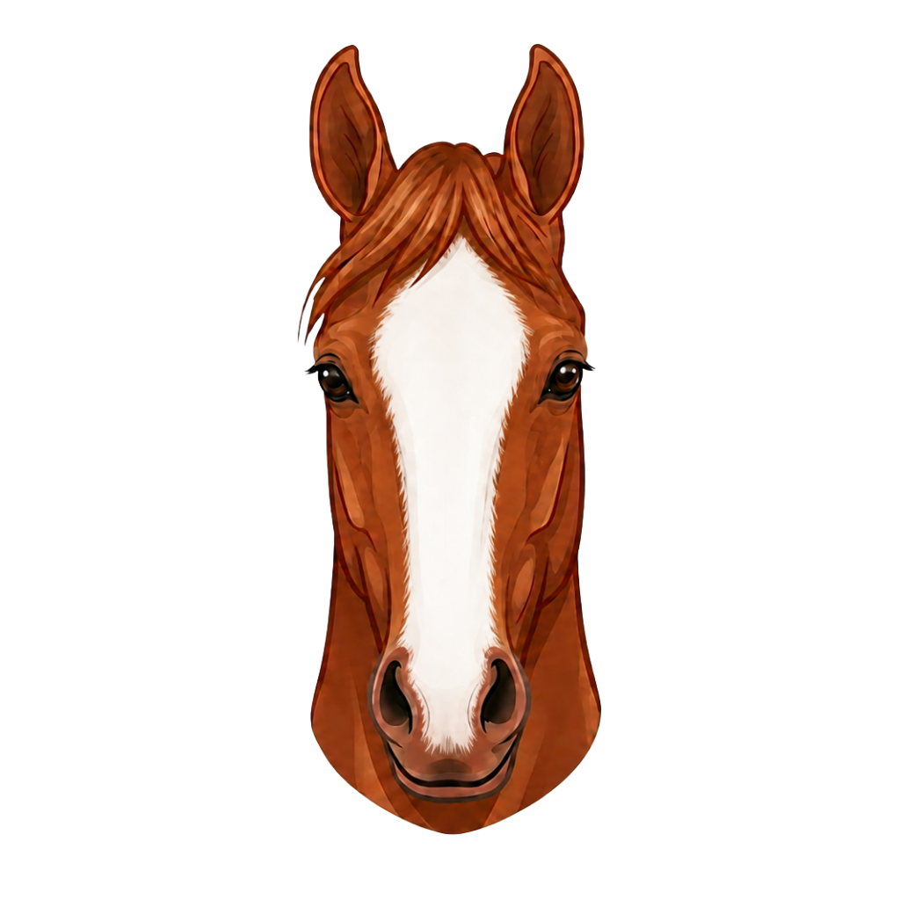
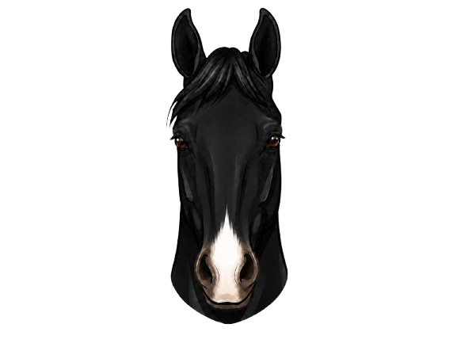
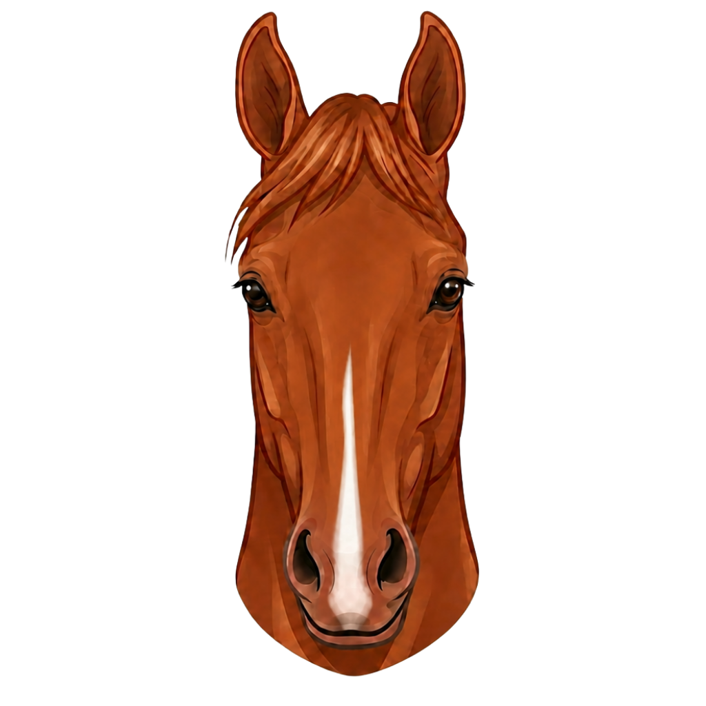
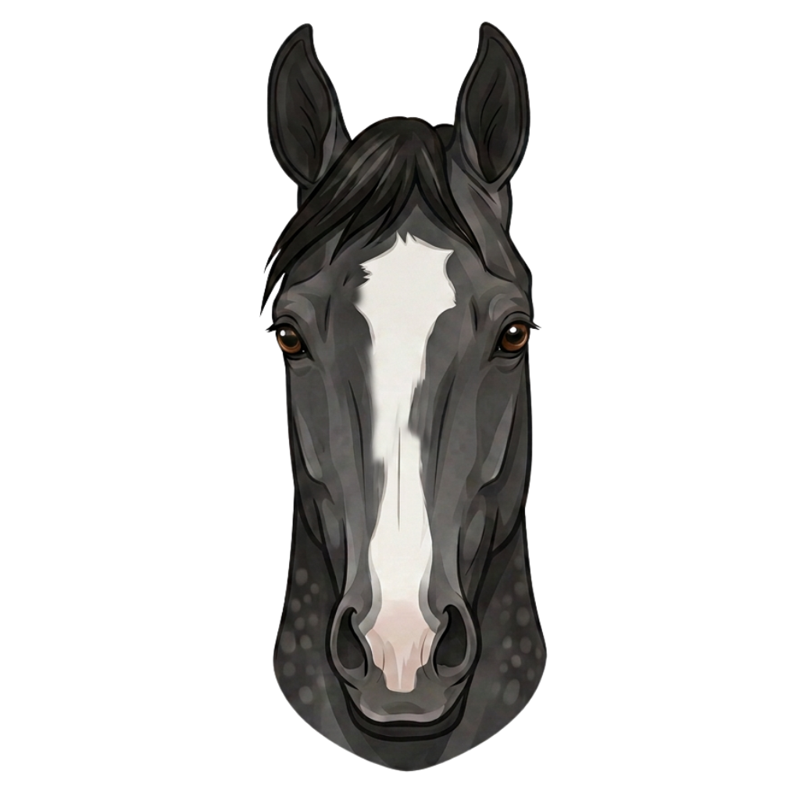

Forehead
ForeheadStar
A star is a white marking found on the forehead between or above the eyes. It can vary in shape, including round, oval, irregular, or faint forms, and is recorded by both its shape and placement.
This section introduces horse facial markings and how they are identified, named, and described. Here visual examples are used to build recognition and understanding of each pattern.

Horse facial markings appear in a wide range of shapes and patterns, with some being more common than others. This section focuses on the most frequently encountered markings, including individual patterns, combinations, and selected variations. Use the tabs below to explore each category.
These markings are the foundation of facial marking identification. Other facial markings are created through variations or combinations of these core types.
ForeheadA star is a white marking found on the forehead between or above the eyes. It can vary in shape, including round, oval, irregular, or faint forms, and is recorded by both its shape and placement.
 Nasal Bone
Nasal BoneA strip is a narrow white marking that begins just below the forehead and runs down the center of the face along the bridge of the nose, ending before the muzzle.
 Full Face
Full FaceA blaze is a broad white marking that runs from the forehead down the center of the face along the nasal bone. It is wider than a strip, but narrower in coverage than a bald face.

MuzzleA snip is a white marking on the muzzle, located between, around, or just above the nostrils. It may be small and limited to the area between the nostrils, or larger and extend to cover one or both nostrils.
 Full Face
Full FaceA bald face is a large white marking that covers most of the face, usually extending from the forehead to the muzzle and around or over the eyes. It often includes pink (unpigmented) skin, and one or both eyes may be blue.
Combination markings occur when two or more facial markings appear on the same horse. Each marking is identified and described individually, then recorded together as a complete description. The examples below show common combinations.
 Forehead + Nasal
Forehead + NasalA star and strip is a star on the forehead and a strip running down the center of the face along the nasal bone. Depending on the horse's base coat color, the markings may appear connected or separated.
 Forehead + Muzzle
Forehead + MuzzleA star and snip is the combination of a star on the forehead and a snip on the muzzle.

Nasal + MuzzleA strip and snip is a combination of a strip running down the nasal bone and a snip on the muzzle. These markings may appear connected or may be separated by the horse's base coat color.
 Forehead + Nasal + Muzzle
Forehead + Nasal + MuzzleA star, strip and snip is a combination of three separate markings: a star on the forehead, a strip along the nasal bone, and a snip on the muzzle.
Irregular markings are variations that differ from standard definitions. They are still recorded accurately, with descriptive detail — such as a crooked strip or a faint star.

VariationAn irregular blaze is a blaze that deviates from a straight, symmetrical path. It may shift to one side, have irregular edges, or differ in width across the face.
 Variation
VariationA crooked strip is a strip that deviates from the midline of the face. It may run off-center, bend, or follow a curved path down the nasal bone instead of a straight vertical line.
 Variation
VariationAn interrupted strip is a strip that appears in separate sections rather than one continuous line. The breaks between white areas are recorded in the official description, as they differentiate it from a solid strip.
 Variation
VariationAn offset marking is a facial marking that is positioned to the left or right of the face's midline rather than centered. Offset markings are typically described by the direction of the shift.